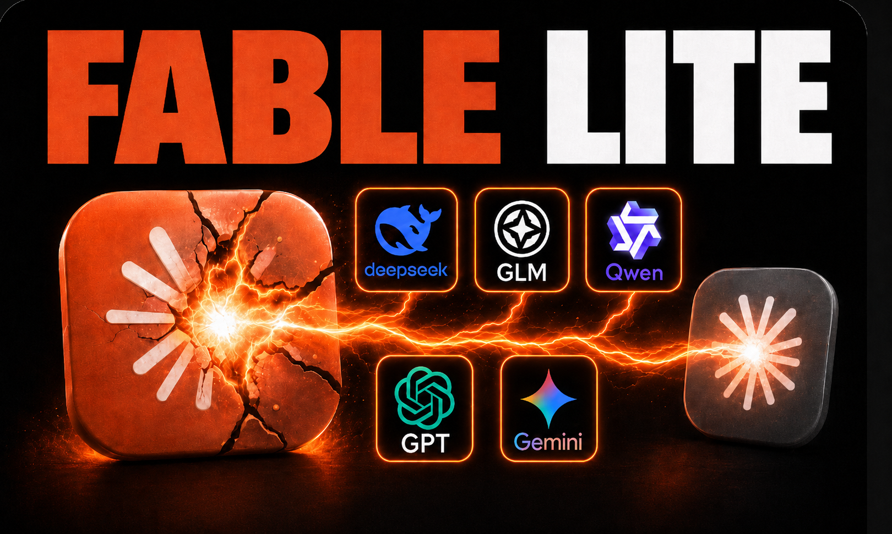
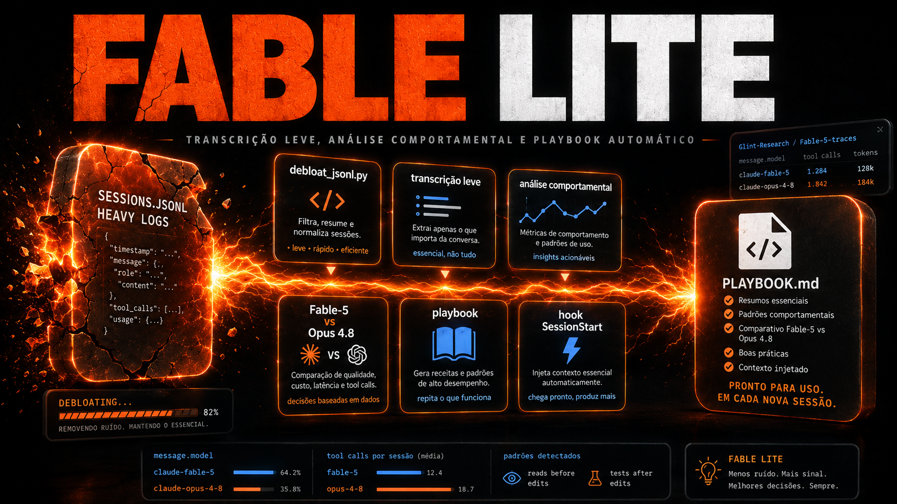

INEMA.CLUB COURSE · v2Fable Lite — Mining Models’ Reasoning
How to distill your logs from the Claude Code, measure how each model works, and turn the delta into a playbook that makes Opus act more like Fable 5.
The technique, in one sentence
Claude Code logs live in ~/.claude/projects/*.jsonl.
Each line is an event; the field message.model says
which model wrote each turn. That's enough to separate Fable 5's work from Opus 4.8's work —
and measure each one's pace using real numbers.
The pipeline is honest and short: (1) distills the filler (tool_results, file dumps, attachments), (2) extracts a model's corpus, (3) measures behavior, (4) compare Fable vs Opus, (5) becomes a playbook and injects it via hook / skill / CLAUDE.md.
How it works—the entire pipeline
From the raw log to the injected playbook: each box is a pure-stdlib Python script in scripts/.

The actual numbers (measured in this project)
Fable-5 thought before acting in 99% of logical turns.
⚠ Update: measured later on a large sample (4.892 steps), the honest number is ~85% (not 99%) and the gap drops to +31 pts — and a hidden gap shows up in test-after-edit (41% vs 2%). See the Track 4 · The Real-World Test.
Opus-4.8 thought before acting 54% of the time—a +45-point delta.
Debloating shrinks a typical session by about 74%.
Tools per turn: Fable-5 used 6,57 tools/turn; Opus-4.8 used 7,86 — in other words, Fable was more economical. The strong, transferable signal is the think-before-acting; the rest are good practices, not a firm delta.
⚠️ The honest finding (what sets this course apart)
O text of reasoning does NOT stay in the logs — it's encrypted (only the signature).
You don't mine the model's literal thoughts.
What you mine is the presence of reasoning, the visible text e a tool sequence — that is, the pace of work. And that’s already powerful enough to become a playbook.
The four paths
🪙 Logs Are Gold
Where conversations live, the anatomy of a JSONL session, and what counts as fluff vs. gold.
TRACK 2🛠️ Hands-on
Debloat in practice, corpus extraction, real numbers, and the Fable vs Opus delta.
TRACK 3📓 From Delta to Playbook
Write the playbook and inject it into the model—even without your own data.
TRACK 4🛡️ The Real Proof
The 3 measurement tests, the sample trap, and the solutions—with usage examples.
Download and use now
📥 The Playbook (.md)
The summary file generated from the real numbers (large sample: Fable 5 85% vs Opus 4.8 54% for think-first, and test-after-edit 41% vs 2%). Point it to your model via a hook, skill, or CLAUDE.md.
🧩 The skill fable-mindset (.zip)
The Claude Code skill with the 5 scripts built in. Unpack it in ~/.claude/skills/ and it runs automatically (debloat, compare models, generate a playbook).
The scripts and the open dataset
📂 scripts/ in this project
Five pure-stdlib Python scripts that handle the entire pipeline: debloat_jsonl.py, extract_corpus.py, compare_models.py, make_playbook.py e import_hf_traces.py.
🤗 Open dataset (Hugging Face)
No data of your own? Use Fable’s open traces to run the pipeline right away.
Glint-Research/Fable-5-traces →Learn to mine the models’ rhythm
This course is part of the INEMA.CLUB community — research, education, and experiments with applied AI.